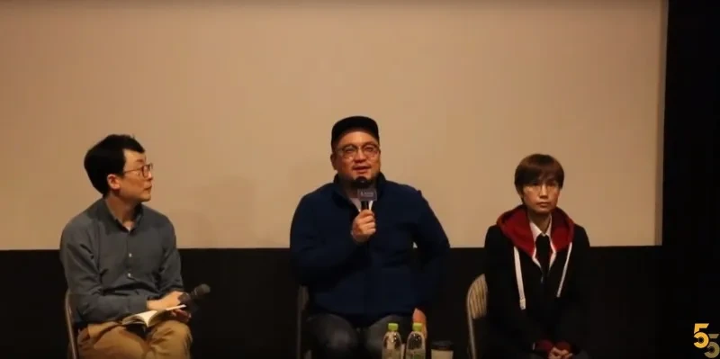

매거진 삼삼오오 · GV 모먼트
<공동정범> 김일란, 이혁상 감독 / 2018.03.18


<공동정범> 관객과의 대화 기록 2018.03.18
참석 김일란, 이혁상 감독
진행 박문칠 감독
기록 이석범 관객프로그래머
박문칠 : 관객 질문을 받기 전에 개인적 질문을 하고 싶다. 어떻게 이 작품을 준비하게 되었는지 궁금하다.
이혁상 : 2012년도였던 것으로 기억난다. 전작 [두개의 문]으로 호주에 가서 교민들과 상영회를 가졌다. 그 때 이충연씨의 부인 정영신씨도 같이 동행을 하셨다. 정영신씨는 ‘용산며느리’로 불리는데 호주에 가서도 며느리 역할을 하셨다. 우리가 영화를 상영하는 동안 정영신씨의 경우 우리는 앞에 나가서 무게를 잡고 있는데, 늘 어딘가에 가서 뭔가 허드렛일을 하고 계셨다. 한국에서도 ‘용산며느리’라는 호칭이 어떤 면에서 문제적일 수 있다. 우린 항상 유가족을 슬픈 존재로서 바라봐야되고, ‘며느리’라는 호칭도 현장에서 늘 누군가의 며느리, 현장의 며느리처럼 계속해서 허드렛일을 해야 되는 상황들에 대한 문제의식이 있었다. 그 때 김일란 감독이 그런 모습을 보면서, 뭔가 해야하겠다 얘기를 했다. 지나가는 얘기로 본인은 해서 기억이 나지 않는다 하셨는데, 나는 ‘이 분이 또 뭔가 하시겠구나?’는 직감이 들었다. 그 때부터 생각을 했다. [두개의 문]이후로도 계속 바뀌지 않는 상황들이고 우리 친구이자 동지인 정영신씨가 계속 해서 유가족으로서 며느리로써 고생을 하는 상황들이 다음 작품을 기획하게 된 출발점이지 않았나 싶었다. 또 몇 달 뒤인 2013년 1월에 이 분들이 출소하시고 재회하시고 자연스레 저 당시 망루안에 있었던 이충연 위원장으로부터 우리가 들을 수 있는 얘기가 있을거고, [두개의 문]에서 다루지 못했던 철거민의 어떤 목소리일 거 같다는 생각에 그를 주인공으로 한 다큐멘터리를 기획하게 되었다. 그 때는 [두개의 문 2]로서 기획을 했는데, [두개의 문]이 경찰 버전의 용산 참사에 대한 재구성이었다면, [두개의 문 2]는 이충연씨를 주인공으로 한 철거민 버전으로 재구성해서 탐사다큐처럼 기획했다. 계속 찍고 있었는데 말을 하시지 않으셨다. 그 안에 있었던 기억들을 끄집어 내는 것을 힘들어 하셨고, 뭔가 자신을 보호하려는 모습들이 느껴져서 어떻게 할까 고민을 하던 중에 같이 올라갔던 연대 철거민들도 함께 만나 의견을 듣는 과정에서 기억도 얘기했지만, 용산 철거민들의 섭섭함과 억울함, 복잡한 감정들에 대해 이야기하기 시작하면서 탐사다큐가 중요한 게 아니라 이 분들의 마음을 들어줘야 되겠다는 생각이 있었고, 그 마음을 쫓아가다 보니 기획방향이 조금 달라졌다. 진상규명 목적이 있었지만 이들의 갈등 상황에 대해 같이 고민할 수 없을까해서 초반과 달라졌고, 그래서 여러분들이 오늘 다큐를 보게 되었다. 어떻게 보면 되게 불편한 내용이기도 하다. 우리끼리는 ‘집안 싸움’이라고 하는데, 운동현장에서 연대했던 동지들 사이의 이런 갈등을 보는 상황이 관객으로서 마주하기 힘든 상황인데, 마주해야지 우리가 진상규명을 한느데 토대가 되지 않을까 생각을 해서 이렇게 만들어지게 됐다.

Q : 저는 이번에 보면서 집안싸움이라 말했지만 ‘연대를 어떻게 해야하는가? ‘라는 생각을 많이 했고, 어떻게 보면 연대할 때 일/목표가 중심이었는데, 사실 운동현상에서 사람들의 감정의 정치도 중요하구나하며 연대가 무엇인가 복잡한 생각이 들었다.
김일란 : 대구에서 [두개의 문]을 상영하고, 내 기억으로는 대구 관객들이 당시 천주석 위원장이 대구교도소에 있었다. 편지를 써서 약간의 위로/응원 편지를 써서 보냈다. 선물로 읽을 책을 보내줘서 천주석 위원장이 굉장히 많은 위로를 얻었다고 얘기하셨다. 그것도 큰 연대였고 당시 용산참사 이후 3년이 지난 시점이었기에 상당히 잊혀지는 상황에서 교도소에서 고립감을 느낀 상황에서 대구분들이 편지를 보내주신 것이 생면부지의 사람들임에도 도와주신 것이 큰 위안이었던 연대가 있는 반면, 지금 모더레이터를 맡은 박문칠 감독도 사드 문제와 관련해서 어떤 순간 연대를 넘어서 자신의 사안이 되기도 했을 것이다. 자신이 경험한 만큼 연대자의 느낌이 아닌 내 문제가 되는 순간이 있다. 그 땐 당사자의 느낌으로 어떤 사안을 바라보는 여러 결이 있는데, 과연 우리가 어떤 연대를 할 것인가 하는 부분에서 사실 이 영화는 복잡한 질문을 던지고 있다고 본다. 우린 때때로 당사자이기도 하고, 연대자이기도 하고, 연대자에서 출발해 당사자가 되기도 하고, 당사자이면서 다른 사안의 연대자가 되는 이런 결들에서 과연 우린 타인의 고통과 경험에 어떻게 연대를 할 것인가 하는 질문에 서로 답하는 시간이 필요하지 않은가하는 제안이 [공동정범]안에 있었던 거 같다.
Q : 영화를 보면서 연대라는 가치가 중요하다고 생각을 하니 마음이 힘들었다. 지석준 투쟁자가 말한 것처럼 ’공동정범‘이라는 타이틀을 씌어서 투쟁자를 흩어지게 만들었다는 생각이 들었다. 투쟁한 자들의 마음에 날이 서는 부분을 보며 감독님은 어떤 마음을 가졌는지 궁금하다.
이혁상 : 사실 이런 갈등이 있다는 것을 우리도 짐작하지 못했다. 애초에 이충연 위원장으로 했을 때 우리도 용산투쟁에 있어 사회적으로 많이 알려진 사람, 그리고 유족들에게 눈길이 먼저 갔다. 늘 그런 눈길 속에서 소외되는 분들이 계시다는 것들은 작품을 하며 깨달았다. 사실 이것을 어떤 식으로 담을까 고민을 했다. 그 고민 중에는 얘기하지 않은 것도 포함되어 있었다. 왜냐하면 우리도 너무 두려워서 사회적 파장을 가져올까 생각이 들었고, 그럼에도 이야기를 해야겠다는 마음먹은 것은 일단 그렇게 안하면 나머지 네 명이 영화를 보지 않을 거 같았다. 또 다른 용산 유가족을 중심으로 한 다큐를 보며 자신들도 지워지게 되는 것인데, 과연 이해해 줄까 생각이 들었다. 무엇보다 이제는 이런 얘기를 해야하는 타이밍이라는 생각이 들었고, ’연분홍치마‘에서 활동하며 성소수자와 여성의 목소리를 담아내려 노력했던 것들이 늘 무시되어 왔던 주제들중 하나였잖은가? 성소수자 이슈들이 나중으로 미뤄지는 최근 상황이 있었고, 개인 명분에 밀려나는 상황들이 우리에겐 상처로 남았고 네 명의 다른 연대 철거민들과 함께 접속할 수 있었던 이유 같다. 이런 이야기를 해보면 어떠겠냐고 할 때 동의하셨고 우리 역시 그 분들의 감정 상태에 집중할 수 있었고, 이 사안에 대해 다루는 힘을 얻을 수 있었다. 힘들기는 하지만 우리들의 선택, 그리고 주인공들의 선택이 의미있는 방향으로 가고 있다고 생각했다.
박문칠 : 이 영화가 여러 가지 방식으로 해석되고 관객들에게 읽히고 있다. 그 중에서 소수자의 시선으로 바라보기에 나머지 연대자들에게 카메라가 갈 수 있었다는 점에서 영화를 여성주의 혹은 페미니즘 영화라고 보는 시각도 있는 것으로 알고 있다. 여성들이 나오지 않지만, 오히려 어떻게 보면 항상 소외된 낮은 목소리쪽으로 간다는 면에서 그런 해석도 있었던 거 같다.
Q : 대구에서 햇수로는 올해 9년째, 내년에는 10년이 되는 LGBT 활동을 하는 사람이다. 사실 [공동정범]에서 다뤘던 얘기들이 저희가 활동가로서 살아오며 마주하기 무섭고 두려운 맥락의 이야기중 하나이다. 최근에도 미투운동이 활발히 벌어지면서 성적 소수자 운동단체 내부 안에 이런 성폭력이 있었는데 왜 몰랐지 할 생각이 들 정도로 수많은 사건들이 튀어나오는 건 우리 내부의 문제들을 돌아볼 용기가 없었기 때문이라 본다. 저도 마찬가지로 오랫동안 활동을 하며 영화 초반에 망루에 올라간 사람들처럼 마음의 결의를 가지고 옥상에 올라갔지만 8년이라는 긴 시간동안 점점 동지들에 대한 신뢰가 떨어지고 (소위 말하는) 환멸이 드는 시기가 오며 잠시 활동을 쉬는 상태이다. 경찰에 의한 폭력도 두렵지만, 내부 사람들이 되돌아보는 용기가 저희에게는 없었다고 본다. 그걸 어떻게 표현해야하는지 생각조차 하지 못했고, 정제된 언어로도 생각해보지 못했고 그런 간혈적 고발이 있어도 한번도 좋은 선례도 남기지 못했다. 청년단체도 알바노조도 그렇고 비민주적이고 구성원을 괴롭히고 폭력적인 형태들이 계속 성과에 뒷부분에 머물러야 하는 상태? 지금도 영화를 보며 손이 떨리는데 어떻게 그걸 마주하면서 이것들을 영상으로 만들어낼 수 있었던 다짐이 있었는지 너무 궁금하다. 한 사람 개인의 문제를 조직으로 다시 가지고 들고가서 정제된 영상으로 끌어내기 까지 굉장히 큰 결심이 필요할거라 생각한다. 저 역시도 개인이라는 한 사람이 커다란 구조적 집단안에 들어가서 내 개인과 이 사람 개인의 문제가 해가 되지 않을지 고민을 하면서 내가 당했던 폭력들을 조직이라는 가치 뒤에 돌아볼 순간들이 항상 한탄스럽다. 동지들을 지키지 못했던 생각들을 항상 한탄스럽다. LGBT운동이라는 것이 그렇잖은가? 걸어가다보면 항상 뒤에 누군가 죽어있다. 그 친구들을 지키지 못했던 순간에 우리가 잘못했던 것은 무엇인지 돌아보는 게 굉장히 무섭다. 어떻게 그런 결심을 할 수 있었는지 궁금하다.
박문칠 : 어떤 면에선 이 영화가 공포영화 일 수 있겠다는 생각이 정말 든다. 그래서 감독님이 두 분이 필요한 작업이 아닌가 생각도 든다. 어떠한 마음가짐이 있었는지 궁금하고, 작업 프로세스에 대해서 소개해 줄 수 있을거 같다.
김일란 : 질문자처럼 미투운동과 관련해서, 여러 많은 이야기가 쏟아지고 있다. 어떻게 이 운동을 바라볼 것인가? 피해자의 진술은 어떤 태도로 들을 것인가? 가해자의 책임은 무엇인가? 단순 폭력이 아닌 권력관계를 어떻게 볼 것인가? 굉장히 많은 질문과 답답한 것들이 쏟아져 나온다. 특히 그런 얘기들이 쏟아지는 한 가운데 어떤 사람들은 굉장히 모르는 얘기에 대해 이 기회를 통해 한국 사회가 시민혁명에 준하는 이 상황속에서 잘 성찰해서 좋은 선례를 남겼음 좋겠다고 한다. 옳은 얘기이지만 한가롭게 들리는 건 성찰이란 건 굉장한 내공이 필요한, 이 자체를 견딜만한 경험과 운동과 자원이 필요하다. 질문자의 이야기를 듣다보니 나의 LGBT운동은 그렇게 성찰을 하기에 자원도 역사도 경험도 인력도 모든 것이 허약하다. 20여년 인권운동을 하면서 역사를 쌓아오기는 했지만 여전히 소수자의 운동으로서 간신히 어렵게 해오고 있는 그 상황에서 건강함을 가지려고 무정히 애를 썼다. 특히 최근 많은 운동의 성장과 더불어, 혐오세력에 대해 특히 대구 지역 같은 경우에는 굉장히 더 심한 혐오표현/세력과 긴장과 그 상황에서 자신들의 마음을 다스리며 운동을 해야하는 이중/삼중의 어려움 속에서 성찰까지 해야 한다는 것은 사실 굉장한 내공과 에너지가 필요하다. 그 에너지를 감당할 정도의 상황인가 했었을 때 자괴감에 들기에 너무나 쉬운 상황일거라고 생각이 든다. 그래서 이 시간을 어떻게 견딜 것인가 하는 게 운동을 하는 사람들 모두의 과제인데, 난 냉정한 평가도 필요하지만 때때로는 그냥 무조건의 어떤 기대도 희망도 필요하다고 생각하기도 하는데, [공동정범]을 만들며 믿었던 것이 있는 거 같다. 지금 우리가 운동사회에서 고민해야 할 것들을 직면하는 것에 서로 조금씩 용기를 내면 넘어갈 수 있다는 것, 같이 문제를 해결할 수 있을거고 지혜를 모을 수 있을거라는 막연한 기대, 그런 기대를 갖고 이 영화를 만들었던거 같고 믿었던 거 같다. 이걸 제기했을 때 반드시 동참해주고 긍정적으로 지금 질문자와 같은 분을 살면서 만날거라는 희망. 우리 문제 의식을 공유해주는 사람이 있을거라는 기대를 했다. 물론 이 영화가 여러 가지 의미로 해석되기도 하지만 나는 활동가들에게 지금 이 사회의 변화를 아프더라도 해보고 싶은 그런 삶을 살고 싶은 그걸 희망하는 사람들과 이 이야기를 할 수 있는 이런 자리가 마련될거라는 기대를 했다. 바꾸기 위해서는 용기가 필요한 것도 사실일거고 그런 측면에서 사실 아는 사람은 알겠지만 이혁상 감독은 커밍아웃을 하면서 영화를 만들기도 했다. 근데 후회하기는 하더라(일동 웃음). 더 필요할 때 할 걸 그랬다고 하더라. 어쨌든 그 커밍아웃 때문에 희망을 얻었던 분들이 있었다. 그래서 이렇게 암담할 때는 길이 보이지 않을 때는 오히려 역으로 무작정의 어떤 기대와 희망, 믿어줄거라는, 언젠가는 만날거라는, 누군가 반드시 응답할 거라는 기대만이 이 상황을 돌파할 수 있을거라는 힘인거 같다. 그건 너무 오글거리는 말인데 이 공간에 있는 사람들이 적어도 알아줄거라는 기대만으로 이 상황을 버틸 수 있는 최소한의 에너지가 아닌가 생각이 든다.

Q : 간단한 질문이다. [두개의 문]은 10만명이 넘었는데 [공동정범]은 겨우 만명이 넘었는데 실망하지 않으셨는지?(일동 웃음) 그 정도 기대를 하지 않으셨는지 궁금하다.
김일란 : 그렇다. 왜냐하면 우리가 아까 바깥에서도 이 얘기를 했었다. 언론시사회를 개봉전에 한다. 배급사 시네마달 역사 이례로 가장 많은 기자들이 왔었다. 기자들만 한 100명 정도? 이건 어마어마한 규모이다. 독립 다큐멘터리에 기자/평론가들이 100명이 온다는 것은 굉장한 것이다. 그래서 ’대박나는 거 아냐?‘ 이랬는데 음....그거랑 상관이 없더라. 조금 실망스럽긴 한데 덕분에 많은 고민들을 하게 됐다. [두개의 문]때는 미처 생각하지 못했던 것들을 보게 되었고, [두개의 문]때는 겪지 못했던 진득한 만남들을 가졌다는 것이 좋은 거 같다.
이혁상 : 제 역사상 최대 흥행작이다.(일동 웃음) 전작 [종로의 기적]은 7000명 정도였다. [두개의 문]과 비교하면 아쉬운 것이 사실이지만, 개인적으로는 최선을 다했다고 본다. 또 그런 생각을 요즘 많이 한다. 관객들이 영화를 보지 않는 것을 시대적인 탓이다고 말하는데 영화를 보다 보니까 이런 주제나 고민을 담은 영화가 어떤 관객들에게는 힘들게 다가갈 수 있겠다, 어떤 식으로 다가가면 조금 더 우리 고민을 잘 전달할 수 있을까하는 고민이 생겼다. 조금 더 시간이 걸려야 이런 성찰과 반성이 어떤 결과가 나올거 같다고 본다. 아직 개봉이 두 달이 다 되어가는데도 여전히 찾아주는 관객들이 있어서 그것만으로도 힘을 얻는다. 어쩌면 [두개의 문]도 반정도 되는 관객들이 우리의 진짜 관객이지 않았을까 싶다. 그 당시 이명박 정권에 대한 평가 내지 대선이 남은 상황이라 지금 민주당같은 정권교체를 열망한 단체들이 굉장히 정치적으로 영화를 많이 봐주시기도 했는데, 지금은 그럴 필요가 없는 때이기도 하니까, 이제야 우리가 [두개의 문]이후 정말 만나야 할 관객들과 가깝게 보고 있구나 생각이 들어서 흥행이 안되서 아쉽지만 그런 면에서 우리에게 도움이 된 거 같다.
박문칠 : 아까 말했던 활동가를 위한 영화라는 말을 했다. 영화를 처음 보았을 때도 그랬는데 어떻게 보면 이 영화에서 철거민 당사자들이 나오지만 다른 의미에서 빈곤 운동과 철거 운동을 하는 활동가들이 있는 것으로 알고 있다. 그들의 목소리는 여기 안 담겨져 있다는 생각이 든다. 내가 영화를 만들었을 때도 활동가들의 목소리를 안 담았던 측면이 있고, 그런 이유들이 있었던 거 같은데 이 영화를 보다보면 그 역할들이 궁금해지기는 했었다. 왜 이런 경험들이 많고 자원들이 많은 그들이 이 사람들을 조금 더 연결을 시켜준다던지 중재를 하는 역할을 못했을까? 어떻게 했을까 궁금증이 생기더라. 중간에 조금씩 나오긴 했지만 영화에 담기에는 뭐했을 수 있지만 얘기를 듣고 싶다.
김일란 : 아까 말한 부분의 연장이자 답인데, 이 영화가 공개되었을 때 용산참사진상규명회는 도대체 뭘 한 것이냐? 당사자들이 이러한 고통에 휩싸여있고 갈등을 겪고 있을 때 당신들은 뭘한거냐는 운동의 평가를 들을 수도 있을텐데 그리고 그 운동이라는 평가의 부분들을 단지 용산참사진상규명의 현재 활동뿐 아니라 2009년에서부터 그 때 용산참사에 함께 했던 활동가, 그리고 같이 시간을 유지한 사람들에 대한 평가이기도 할텐데 그래서 어떤 사람들은 한국사회의 운동에 대한 평가로 볼 수 있을텐데 괜찮겠냐, 감당할 수 있겠냐고 했을 때 당연히 그 평가라는 것에서 미디어 운동을 했던 우리도 들어간다. ‘연분홍치마’라는 활동가로서 인권활동을 하는 우리로서도 활동의 평가를 포함해서 각오가 되어있는데 용산참사진상규명회는 각오가 되어있냐 했을 때 이원호 사무국장은 ’뭐, 비판받을만한하니 비판받아야죠‘ ’오히려 저는 그게 더 좋은데요?‘라고 하면서 정확하게 할 수 없던 영역에 대해 자신도 헷갈리고 어디까지 해야되는가? 그리고 이원호 사무국장은 항상 최선을 다했다. 영화를 보면 알겠지만 당사자들이 이렇게 문제가 생길 때 언제든 쫓아가고, 때때로 사회복지사처럼 때때로는 상담사처럼 때때로는 동네주민으로 어떨 때는 친동생처럼 늘 그렇게 달려가며 했지만 그 개인의 역량과 상관없이 운동 전체의 역량이 받쳐줄 수 없었던 것에 대한 평가는 반드시 필요하다 생각했다. 그 평가를 받아야 변화가 일 수 있다고, 용기를 내야 한다고 이원호 사무국장뿐만 아니라 현재 용산참사진상규명회의 활동가들도 연분홍치마도 다 함께 주인공들만큼 용기를 내면서 만들었던 부분이 있다. 근데 그렇게 용기를 낼 수 있었던 것이 한 개인을 평가하려는 게 아니라 우리의 대한 평가를 해야 한다는 필요성에 모두 동의했기 때문인 거 같고, 사실 그것이 지금 미투운동과 다르지 않았던 거 같다.
박문칠 : 개인적인 궁금중을 풀어줘서 감사하다. 이원호 사무국장은 아실 수 있겠지만 영화의 주인공 중 한 명인 김주환씨가 경찰서에 술 때문에 있었을 때 와서 달래주고 얘기도 들어줬던 사람이다. 한 가지 더 궁금한 질문을 드리자면 최근에 이충연 위원장이 GV에 나서서 관객들을 만났다고 들었다. 그 때 어떤 얘기들이 나왔는지 궁금하고, 이후의 후기도 궁금하다.
이혁상 : 안 그래도 서울에 있는 인디스페이스에서 처음으로 이충연 위원장과 김창수 위원장이 나와서 관객들을 만났다. 물론 여러분들도 예상하겠지만 문 밖에서 덜덜덜 떨면서 GV를 모시는 시간을 가졌는데 무슨 지옥에 끌려가는 것처럼 기다렸는데 막상 극장을 들어오는데 관객들이 모두 지금까지 관객들의 대화를 하면서 가져본 적 없는 뜨거운 박수로 두 분을 맞이해주셨다. 그러면 긴장이 좀 풀렸던 거 같다. 사실 크게 주목할 만한 얘기나 인상적인 얘기는 못하셨다. 떨리기도 하고 그랬는데 하는 시간동안 관객들과 교감을 나누고 응원도 해주시면서 조금씩 좀 더 해볼 수 있다는 생각을 하는 거 같다. 어쩌면 이런 자리들을 위해 우리가 4~5년동안 다큐멘터리를 만든 게 아닐까는 생각이 들 정도로 끝이 아니라 이제부터 뭔가 시작되는 느낌이구나 생각을 했다. 이충연 위원장과 다른 옆의 철거민들의 관계부터 시작해서 대중들과의 만남 속에서 용산 참사의 의미가 새롭게 써지겠구나 하는 순간이었다. 사실 그 사이 생각하는 것처럼 극적이지 않지만 영화에서 완벽한 해피엔딩을 많이 봐서 이들의 관계도 굉장히 좋아질거라 보시는 분들도 계신다. 그 정도까진 아니고 김창수 위원장이 굉장히 놀랍다고 하며 해주는 말들이 이충연이 이제 자기들하고 술마시며 어영부영하기 시작했다고(일동 웃음). 김창수 위원장이 그 말이 되게 꽂혔단다. 아, 이게 누군가에게는 어영부영으로 비춰질 수 있겠구나? 그러면서 어제도 얘기하다 김창수 위원장도 보셔서 알겠지만 성찰적이고 반성하는 사람이다. 아, ’그럼 나도 술 먹고 어영부영까지는 괜찮은데 이 사람들 술 취해가지고 노래방 가는 것도 자기는 그렇게 싫었다. 지금 이 상황에서 노래를 부를때냐?’ 이충연 위원장은 어영부영형이었고, 자기는 흥청망청 노래 부르면서 놀고 노래방에서 술마시고 이런 것들이 이충연 위원장과 같은 생각이었던 거 같다. 그 사이 성찰도 하시고 그러더라. 그렇게 이충연 위원장은 뭔가 바뀌어보려고 변화해보려고 이 관계를 잘 이끌어서 진상규명까지 해보려고 이렇게 노력을 하고 있고, 그 밖에 다른 분들은 아직까지 ‘쟤가 정말 그런걸까?’라고 생각하며 동시에 대견해하는 부분이 있더라. 특히 천주석 위원장이 영화에서 큰 동기를 가진 것처럼 이충연을 옥죄어 왔었는데 영화를 보고 나서 ‘이충연 위원장이 먼저 뛰어내렸단 건 사실인데, 사실 이충연 위원장이 먼저 그 쪽을 뛰어내렸기 때문에 우리도 덩달아서 뛰어내려 살 수도 있는건데, 사실 아무것도 안보이는 아비규환 속에서 누군가 먼저 스타트를 끊은 것이다. 탈출구가 저쪽임을 몸소 알려준거라 할 수 있잖은가? 그런 말을 하면서 내가 너무 호되게 이충연을 몰아가서 미안하다고 하기도 했다. 그래도 천 위원장은 60점 정도로 평가하고 있다.(일동 웃음) 그전에 마이너스 1000점이었는데 지금은 계속 지켜보고있겠지만 대견해하고 있다. 아직까지 정말 ’우리가 남이가?’하는 분위기는 아니지만 진상규명을 향해 가는 과정에서 다시 한번 동지들의 여러 증언이 필요할 때 한 목소리를 낼 수 있는 분위기는 만들어진 거 같다.

Q : 얼마 전에 또 다른 국가폭력 사태의 유가족인 백도라지 선생과 함께 GV를 했다고 들었다. 혹시 GV에 나왔던 기억할만한 이야기가 있는가?
김일란 : 정말 백도라지씨의 말씀 하나면 이 영화가 필요 없을 정도이다. ‘유가족에 대한 시선 중에 동정의 시선, 유가족을 바라보는 동정의 시선이란 것이 굉장히 참기 어려운데, 왜냐하면 그것은 차별이고 혐오이기 때문이다. 동등하지 않은 것, 동등하지 않은 관계, 그런 연대는 필요 없다. 그리고 오히려 또 반대로 희생자이고 유가족이고 피해자이기 때문에 굉장히 성찰적이고 훌륭할 것이라는 기대도 차별이고 혐오이다. 왜냐하면 같이 평범했던 사이들이 어느 날 갑자기 불행할 일을 겪었던 것일 뿐인데, 그저 영웅을 기대하거나 혹은 역경을 이겨낸 사람, 수기같은 멘트를 기대하는 것 역시 차별이자 혐오이다. 동등해야한다.’는 말을 했다. 예를 들자면 백도라지씨가 지적한 것 중 하나가 예전에는 성소수자들에게 사회적 대안을 물어보거나, 더 훌륭하다 생각하거나 이 사회에서 필요한 부분에서 사회적 대안을 고민할 때 성소수자들이 더 예민함을 가지고 있기에 그 안에서 대답을 기다리는 것도 성소수자라고 언제나 대화할 수 있는 것이 아니라 언제나 같이 이 사회를 고민하는 사회적 구성원 중 하나일 뿐인데, 언제나 대안과 정답을 얘기하는 것처럼 기대하는 그런 분위기가 예전에는 있었다. 어쨌든 백도라지씨가 성소수자 얘기를 했다는 것이 아니고, 유가족에 대한 사회적 시선에 양 극단, 연민의 시선이던 영웅적인 것을 기대하는 것이던 둘 다 대등하지 않다는 점에서 ‘차별이 곧 혐오이다’는 말을 했다. 또 하나는 정말 이것도 인상적인데 ‘우리가 피해자를 어떻게 바라볼 것인가?‘에서 피해자의 자격을 묻는 습관들에 대한 지적을 하셨다. 또 그런 측면에서 볼 때 피해자를 하나의 범주로 보면서 하나의 카테고리로 묶어 똑같은 피해자의 모습을 기대하는 것. 사실 피해자가 되기 전에, 유가족이 되기 전에, 유가족의 신분을 내가 원해서 얻었던 게 아니다. 피해자라는 것은 내가 원해서 된 게 아닌데 그렇기에 각자의 삶을 살고 있었던 사람들이 어느 날 갑자기 유가족이 되거나 피해자가 되는 것 만큼 각자의 삶 안에서 봤을 때 다양한 모습을 가질 수 밖에 없다. 그래서 ’피해자란 이래야 한다‘ ’유가족이란 이래야 한다‘고 강요하듯 보는 거 또한 차별이란 말을 해주었다. 근데 저는 정말 감탄스러웠던 것이 사실 사회적 소수자가 되면 혼자 힘으로 저항하기 힘드니 연대를 부탁하게 되는데, 부탁하는 입장에서는 되게 읍소할 수 밖에 없고, 대등하기보다 부탁하고 좋은 모습을 하게 되는데, 백도라지씨는 ’그런 면도 필요없습니다‘라며... 피해자와 동등한 관계에서의 연대, ’당신을 만족시키기 위해 이용하지 마십시오‘라고 하시는 모습이 정말 놀라웠다. 지금까지 내가 본 경험에서 봤을 때 동등한 관계로 차별과 혐오를 이야기하는 분은 처음 보았기에 굉장히 인상적이었다.
이혁상 : 어제 서울에서 GV가 끝나고 나서 이충연 위원장과 김주환 위원장 모두 뒷풀이에 갔고 중간에 (이충연 위원장의 부인)정영신씨도 오셨었는데 백도라지씨에 대한 얘기가 나왔었다. 백도라지씨가 어느 시점에서 불편하니까 상복을 벗었다. 어떻게 보면 상징적인 순간이었던 거 같다. 심지어 정영신씨도 ’어, 그 상복을 어떻게 벗었지?‘라고 했다. 상복이 상징하는 것이 정말 고달픈 것이다. 검은색 치마저고리가 상징하는 것이 용산며느리에게, 또 백도라지씨도 백남기 열사의 딸이다. 딸이라는 위치에 가해진 사람들이 생각하는 정서와 태도들이 있었을 것이고, 그걸 물리쳐 낸 것이다. 그런 점들이 인상적이었다. 중간에 백도라지씨의 동생이 가족모임을 발리에서 한 것을 가지고 ’피해자의 자격 논란‘이 있었다. 그 당시에도 백도라지씨와 가족들은 유가족에게 이런 정신적 안정의 시간들이 필요하다는 말을 들으면서 앞으로 다른 참사가 일어나지 않아야겠지만, 소위 운동진영에서 유가족을 앞세워서, 유가족을 중심에 두고 하는 추모투쟁들의 방법론이나 태도/전략같은 것들이 백도라지/백남기 농민이 참사 이후 과정들과 그러한 실천들을 통해 조금씩 바뀌어나갈 수 있지 않을까는 생각이 들었다. 어제 그 자리에 활동가들이 있었는데 이러저러한 일로 백도라지씨를 소개해야 하는 일이 생겼다고 한다. 근데 용산만 해도 누가 소개하면 모든 일을 제쳐두고 용산에 가서 한마디라도 해야 하는 절박함, 사실 개인적인 생활이 안되는 부분들이 있었는데 백도라지씨는 ’제가 지금 회사에 일이 있어서 참가할 수 없겠습니다‘고 말하였다. 사실 어떻게 보면 그게 맞는 것이고, 개인의 삶을 지속시킬 수 있는 부분들인 거 같다. 어떻게 보면 활동가들도 참사와 이슈들을 해결하기 위해 유가족들과 참사 피해자들에게 무리한 요구를 한 게 아닌가하는 반성을 하며 앞으로의 투쟁 방식들이 바뀌어야 하지 않겠느냐는 생각들을 같이 했었다.
Q : 사회복지와 관련된 영화제에서 일하고 있다. 영화제를 하게 되면서 노조와 관련된 다큐멘터리 상영을 많이 했었다. 그 중에는 대구지하철안의 노조들이 10년 동안 투쟁하는 [탈선]이라는 영화를 만들었는데 당사자들은 자신들이 나오는 다큐를 보는 것을 꺼려했다. 일상에서도 힘든 일을 겪고 있는데 영화에서 다시 그런 순간들이 재현되는 것을 싫어하셨다. [공동정범]에 등장한 당사자들은 영화를 봤는가? 그리고 어떤 얘기를 하였는가?
김일란 : 당사자...주인공들 같은 경우 천주석 위원장은 이충연 위원장에게 ’미안하다‘ 첫 번째로 뛰어내린 것에 대해서 자신이 나쁘게 말한 것이 미안하고, 각자의 소회에 대해 말했었는데, 소회를 말하는 것에 대해 모두의 감정은 잘 몰라서 미안하다. 서로의 상처에 대해 힘들거라고 하지만 직접 듣고 이야기하는 것을 차분히 받아들인 적이 없었기 때문에 그 사람이 혼자 있을 때 어떤 생각을 하는지, 어떤 상태로 일상을 하루하루 보내는지 상상하기 어렵다. 그런 부분에서 스크린으로 대면을 하니 각자의 마음이 미안하고 잘 이해못했던 것도 나쁘게 얘기한 것도 미안하고, 우린 왜 그런 시간을 보냈어야 했을까?...그런 식의 분위기였던 거 같다. 지금 말한 작품하고는 조금 문제가 다른 거 같다. [공동정범]이라는 영화의 한 편에서는 각자들이 몰랐던 서로를 바라보게 하는 부분들이 ’우리가 왜 그런 영화를 봐야 해?’라기 보다는 몰랐던 점을 알게 해서 고맙다는 부분이 있었다. 유가족분들의 경우에도 (혁상 감독이 잠깐 얘기했던 것이지만) 생존자들이 어떤 어려움을 겪는지 정확히 몰랐다. 남편을 잃고 아들을 잃고 한 가족을 잃은 것에 대한 상실과 좌절들 때문에 생존자들, 감옥에 있지만 살아 돌아온 그들에 대한 감정에 대해 긴장이 있었다. 힘들어 했던 것이 있었다. 아무리 기다려도 돌아오지 않는 가족과 기다리면 돌아올 수 있는 가족이란 것은 사실상 유가족들의 마음이 옹졸하다고 말할 수 있는 그런 것이 아니다. 상실감이란 것은 너무나 우리가 상상할 수 없는 정도의 깊은 고통인데 그래도 유가족분들이 생존자들의 석방을 위해서 엄청 투쟁을 했지만 막상 영화도에 나온 그 장면, 2013년 1월 31일 출소했던 그 날에는 유가족들이 없었다. 보기가 너무 힘들었던 것이다. 생존자들을 보기 싫었던 것이 아니라 자신의 상실이 다시 직면해야 하는 했던 것이 너무 컸던 거 같다. 근데 유가족들이 이 영화를 보면서 생존자들의 고통을 다시 생각해 본 게 된 면이 있었고, 그런 부분들에 있어서는 서로 몰랐단 것에 대해 미안하다는 말을 한 부분이 질문한 경우랑 다를 수 있겠다는 생각이 든다.

이혁상 : 대구 내려오면서 문자를 하나 받았다. 천주석 위원장이 인디스페이스에서 어제 GV에 이어 오늘도 혼자 영화를 봤다고 한다. 뭔가 미안하다고 하면서 송구하다고, 영화가 잘 안 된게 주인공들 탓인거 같다는 자책을 하시더라(일동 웃음). 차라리 감독들이 못 만들었음 못 만들었지, 그 문제는 아닌데.. 그래서 답장을 보냈다. 나만 또 보면 또 우실거다. 늘 운다, 다들 영화를 보고 나면. 근데 GV를 하러 들어오기 전에 천주석 위원장에게 문자가 왔었다. 김주환 위원장이 대구에 와 있다고, 또 뭔가 생각에 젖었을거다. 근데 내가 이럴 때 연락을 드려야 한다. 술을 좋아해서 많이 마시면 무슨 일이 벌어질지 몰라서 이거 끝나고 또 전화해서 ‘조금만 드세요’라고 해야 할 듯 하다.
박문칠 : 어떻게 보면 그런 다큐멘터리가 소통을 직접적으로 대놓고 하기가 워낙 어려운 사안들이 있을 수 있다. 특히 이런 큰 참사를 겪고 난 뒤에는 말씀하신 것에서는 세월호가 생각나기도 하는데, 다 한마음 일거 같지만, 학생 유가족과 일반인 유가족, 그리고 생존자와 미수습자.. 조금씩 마음이 달라 어긋나는 부분들도 생겼던거로 아는데, 서로 교감을 해야하는 사람들끼리도 못하게 되는 것이 현실인 거 같다. 영화 혹은 예술이라는 것이 약간 굿같다는 생각도 들고, 그런 쌓인데 대해 풀어주고 소통해주는 역할, 스크린을 매개로 해서 한 역할들이 되는 거 같다. 나도 첫 번째 영화를 가족에 대한 다큐멘터리를 찍었는데 가족들끼리도 서로 속내를 드러낼 그런 게 없는 것이다. 매일 보고 밥을 같이 먹고 하지만 정작 과거에 입은 상처나 민감한 얘기를 하면 서로 얼굴이 붉어질 수 밖에 없는 얘기는 오히려 안하게 되는 것이 사실 더 자신의 감정을 보호할 수 있는 하나의 방편인건데, 가족도 그런데 이건 생판 남이다. 다른 동네 살고 그 날 잠깐 도와주러 온 사람인 경우들도 영화를 보면 있는데, 생판 남들끼리 그런 이야기들을 나누는 게 그만큼 어려운건데 영화가 해줬다는 생각이 든다.
Q : 본래 이 영화가 진상규명이 의도였다. 그럼 차후 진상규명 과정을 다룬 영화를 만들 의향이 있는가?
이혁상 : 지금 청와대로부터 경찰폭력 인권침해 진상조사 위원회를 꾸려 조사하라는 지시가 떨어져서 경찰 내부에 조직이 만들어져 있고, ‘용산참사’에 대해 먼저 우선순위에 두고 있다고 한다. 근데 수사권이 없기 때문에 어떻게 전개 될 지 두고 볼 문제인데, 예의주시하면서 계속 어떤 압력을 가할 수 있을까 고민하고 있고, 여기 계신 분들도 그 부분에 있어서 주시를 해주시면 좋을 거 같다. 그 부분까지 담을 수 있을까도 고민이다. 일단 그들의 조사위원회에서의 어떤 활동이 잘 진행되기 바라고, 만일 그것이 제대로 안됐다고 하면 다룰 수도 있을 것이다. 근데 그런 일이 안 일어났으면 하는 게 생각이다. 영화가 아니라 현실에서는 무언가 해피엔딩이 있었음 좋겠다.
Q : 영화에서 1차 진상규명회에 다들 모이는 장면이 있다. 이충연 위원장과 다른 당사자들간의 사이가 안 좋았는데, 2차 진상규명때는 분위기가 달라진다. 화해를 한 거 같은데 중간에 이런 과정이 빠져 있다는 생각이 들었다. 1차와 2차 진상규명 사이 화해하는 과정이 누락된 이유가 궁금하다. 두 번째로는 김주환 위원장이 술을 먹고 사고를 치는 장면이 있는데, 실제 자기가 겪은 거짓말을 한 건지, 횡설수설을 한건지 아니면 진짜 말씀이 맞는지 궁금하다. 트라우마에 의한 행동인지 궁금하다.
이혁상 : 두 번째 질문에 대해 답변하자면, 김주환 위원장은 사실 경찰의 경관등과 사이렌에 상당히 민감하다. 예전에 ‘연분홍치마 후원주점’을 한 적이 있었는데 그 때도 위원장이 왔다. 술을 드시긴 했는데 영화에 나왔던 수준까지는 아니었다. 마침 연분홍치마 후원주점을 하던 건물 앞으로 119 구급차가 지나갔는데 굉장히 ‘저 사이렌 소리 뭐야?!’하면서 다급히 했다. 택시 안에서 벌어졌던 일도 사실 일종의 술을 마시긴 했지만 그런 망상의 결과였던 거 같다. 기사가 바뀐 것도 아니었고 다만 그렇게 느껴졌던 것이고, 거기 갑자기 경찰이 와서 취조를 하는 상황이 이전의 트라우마를 일깨워 왔던 거 같다. 택시 운전사의 진술과 위원장의 진술이 너무나도 차이가 있고, 위원장의 그 말은 말하자면 트라우마로 인한 망상과 관련한 내용이다. 그래서 그런 부분을 어떻게 관리를 해야할까 고민하는 중이다. 가장 중요한 것은 왜 이런 트라우마를 해결하는 것은 사실 트라우마를 제거하는 것은 참사다, 사회적으로 어떻게 해석되느냐 그것이 어떻게 책임과 처벌로 이어지고 명예훼손이 됐던 것들에 대해서 복원이 되느냐는 것이고, 명예훼손이 됐던 것에 대해 어떻게 복원이 되냐 이 문제인 거 같다는 생각이 된다. 어쩌면 그것을 극복할 수 있는 기간이 조금 더 길어질 수 있지 않을까 생각이 드는데 빨리 앞당기도록 해야 될 거 같다.
김일란 : 첫 번째와 두 번째 진상규명회의 사이에 있었던 일에 대해 점핑한 것 아닌가라고 생각할 수 있을 거 같다. 우리가 생각했을 때 극적인 상황이 있었는데, 제일 먼저 뛰어내렸다는 증언을 한 건 지금까지 이충연이라는 한 인간이 자신이 말하고 싶은데 말할 수 없던 주저했던 긴 시간이 있다. 거의 8년에 가까운 시간인데 영화를 찍었을 때는 6년에 가까운 시간이었고 게다가 4년을 독방에서 그 상황을 복기하고 복기하며 얼마나 많은 후회와 자책을 했을 것이다. 아버지를 두고 제일 먼저 뛰어내린 한 아들의 입장을 생각해보면 ‘내 잘못이 아냐’부터 ‘만약 내가 조금만 침착했다면 아버지를 살릴 수 있었을까?’하는 후회와 자책, 그런 상황에서 아버지를 살렸어야 했다는 비난을 들으면 어떡하지? 등등... 우린 이것이 쟁점이니까 이 용산참사의 마지막 순간, 불이 왜 났는지가 사실 쟁점이다. 그 쟁점을 복기하고 복기해서 얼마나 그 생각을 했었을까? 그리고 감독들은 계속 ‘이상하다, 계속 이야기가 빠지는 것 같은데? 뭐지..?’라고 자꾸 물어보는데 말할까 말까... 말하면 비난받지 않을까하는 이런 식의 시간들을 계속 우리도 다큐 내내 보고 있는데 ‘저 위원장도 뭔가 있는데 항상 얘기를 저기서 끝내지?‘ 우린 항상 극단적 상상을 하게 되는 것이다. ‘이충연 위원장.. 우리에게 말하지 못하는 결정적 비밀이 뭘까?‘ 극적인 것까지 상상하기도 하고, ’아주 사소한 ’일‘일거야’부터 ‘우리가 감당할 수 없을 정도의 어마한 비밀이면 어떡하지?‘. 예를 들면 화염병을 안에서 던졌나? 별 생각을 다하고 있었는데 이충연 위원장이 1차 진상규명을 하고 자기도 충격이었던 거 같다. 그래서 본인도 생각하고 생각했던 것에서 털어놓는 증언이야말로 결정적 사건이었다 생각하는데 한번 털어놓으니까 털어놓은 연기가 생긴 것이야 말로 사실 핵심적이었던 부분인거 같다. 스스로 주저했던 그 순간, 못났다는 것을 인정하고 내가 비록 못나보이더라도 이야기를 다시 꺼내서 진상규명을 할 수 있다면, 다시 이야기를 시작할 수 있다면 할 수 있겠다고 해서 한 것이 2차 진상규명회 였다. 이것보다 극적인 게 있을까 생각했던 거 같다. 그것이 잘 표현이 되지 못한 부분이 있을지 모르지만 저희는 가장 극적이었다. 이 한 마디를 들으려고 어쩌면 그 오랜 시간 이 주저함을 같이 했다는 별별 상황을 다 했다. 사실 그 얘기를 했을 때 허망하기까지 했다.
’별거 아니잖아?‘ 너무 극단까지 생각을 했지만 사실은 별거이다. 제일 먼저 뛰어내렸던 것에 대한 부분은 사실 굉장한 거였다. 아버지를 두고 동지들을 두고 무섭다고 자신의 비겁한 모습을 인정하는 건 인간이라고 했을 때 우리 모두가 다 마찬가진데 자신의 비겁함을 인정하는 것 만큼 어려운 일이 또 있을까? 그걸 인정하는 순간 다시 이야기가 시작되는 그것이야말로 가장 드라마틱하고 가장 인간적인 모습이었다고 생각을 했고, 그것이 진상규명회 동지와 스스로를 위한 마음을 먹어주는 것이 제일 힘든데, 그 마음을 먹어준 것이 너무나 감사했던 순간이었다.
Q : 주인공 중 한 명이 비밀이 있다고 영화에 나왔었다. 놀랐던 점이 이충연 위원장이 처음에 자기가 물어보지 못했는데 거기서 눈물을 흘렸다. 그가 정말 얘기하고 싶은게 있는데 지금은 말 못한다 했다. 영화의 편집인지 영화를 찍어가는 과정에서 발생했던건지 제가 보는 입장에서 만약 저것이 편집이라면 너무 극적이다는 생각을 했다.
김일란 : 그 질문을 받을거라 생각할 정도로 이 영화가 극적인 거 같다. 그러니까 때때로 영화가 오해를 받는 것이 ’편집으로 만든 거 아냐?‘이다. 혹여 그 질문을 받을 때 진짜 자신있게 대답하기 위해서 그런 식의 부분에 대해서는 정말 건드리지 않았다. 시간의 순서대로이고 같이 해메는.. 이 영화의 감정구조는 우리의 감정구조하고도 같다. 감독들이 주인공들과 함께 겪었던 감정선과 거의 같은 순서이다. 그럴 수 밖에 없었던 것이 이충연 위원장에 대해서 ’왜 저러지?‘라는 의문을 가졌고, 주저함에 대해 ’저게 뭐지?‘싶었다. 지금 말한거처럼 천주석 위원장이 제일 먼저 뛰어내린 사람을 아는데 지금은 말 못한다고 할 때 궁금했다. 하지만 사실을 알았다. 너무 냄새를 풍기며 말하기에 이름 석자만 얘기 안했을 뿐이지, 대충은 알았다. 누군지 알 거 같은 느낌이 들었지만, ’누군지 알아요?‘하는 우리의 반응도 있었지만 사실 그 부분에 대해 이야기하지는 않았다. 그 이름 석자를 놓고 얘기하지 않은 것이 천주석 위원장의 동지에 대한 예의인 거 같다.
Q : 사실 영화를 보면서 그 얘길 할 때 누군지 알겠다는 게 보였다. 근데 나중에 그렇게 하니 정말 편집이 기가 막히다는 생각이 들었다.
김일란 : 편집을 했는데 그런 감정조절에 대해 인위적으로 조작을 하거나 극적으로 만들기 위해 한 것이 아니라, 누군지 말할 수 없다고 하면서 더 이상 그것을 우리가 짐작하지 못하게 편집한 것이 아니라 누군지 알 게 저희가 편집한 건, 그 말을 할 때 누군지 알 것 같았기 때문이다. 누군지 알 거 같은데 그것에 대한 감정은 저희가 그대로 관객들에게 ’누군지 알 것 같죠?‘라는 느낌으로 편집을 했다.
박문칠 : 시간관계상 관객과의 대화를 마치겠다. 먼 길 와주신 두 감독님, 정말 감사하다.